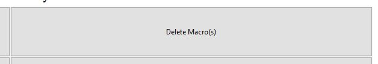
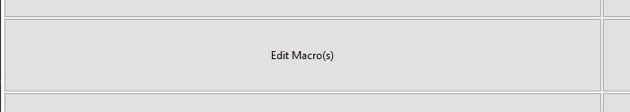

Choose the key that you want to assign a macro to. (This must be a single, non-modifier key)
Type the keys you want the key to press in the order you want them to be pressed. (These can be any keys)

Press the esc key to stop recording key presses to be stored in your macro.

Activate your macros to have any of the keys you have assigned macros to instead simulate their corresponding key presses.

You may view your macros at any time using the view macros button on the home page of the app.

You may also delete any of the macros you have made by using the delete macros button of the app.
